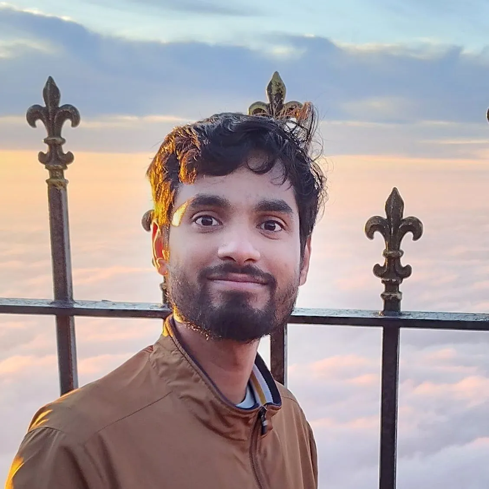

Kirteyman Singh Rajput
- Research Assistant at Biomedical and Electronic Engineering Systems (BEES) Laboratory
- Department of Electronic Systems Engineering
- Indian Institute of Science, Bangalore, India
Education
- M.Tech., Department of Electronic Systems Engieering (DESE), Indian Institute of Science, Bengaluru, India, 2022-2024 (June).
- B.Tech., Electronics and Telecommunication, Bhilai Institute of Technology, Durg, India, 2017-2021.
- Higher Secondary Education, Jawahar Navodaya Vidyalaya, Kabirdham, India, 2016.